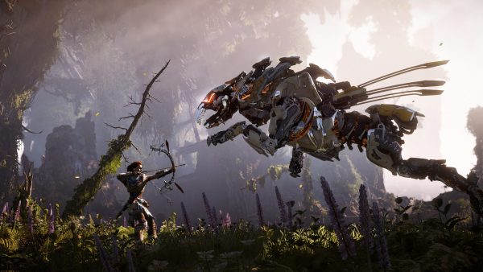

Horizon Zero Dawn
Puntuación
- Gráficos
- Sonido
- Historia
- Jugabilidad
Sinopsis
Horizon Zero Dawn es un videojuego de acción, aventura y de mundo abierto desarrollado por Guerrilla Games y distribuido por Sony Interactive Entertainment para PlayStation 4. Es la primera propiedad intelectual de Guerrilla Games desde la serie Killzone en 2004 y se anunció por primera vez en el E3 2015. El juego está protagonizado por Aloy, una guerrera de la tribu de los Nora y está ambientado en un futuro post-apocalíptico donde las máquinas son la raza dominante de la Tierra
Horizon Zero Dawn se convirtió en el mejor debut de una nueva IP en PlayStation 4, marca que consiguió tras superar al videojuego No Man's Sky. Además, el videojuego recibió críticas excelentes por su historia, su ambientación, aspectos visuales, el mundo abierto, el personaje de Aloy y el trabajo de la actriz Ashly Burch interpretando al personaje. También es considerado uno de los mejores videojuegos de 2017 y uno de los videojuegos más vendidos de PlayStation 4.
El juego cuenta con un contenido descargable titulado Horizon Zero Dawn: The Frozen Wilds, disponible desde noviembre de 2017 (Leer más)